“
A cada dia ela está mais confiante, tranquila e adaptada à nossa rotina.
Resgatada com medo e insegurança, Gaia evoluiu com a orientação do João e respeito ao seu tempo.
RaquelTutora da GaiaAdestramento individual para agressividade, reatividade e problemas comportamentais em Brasília/DF.
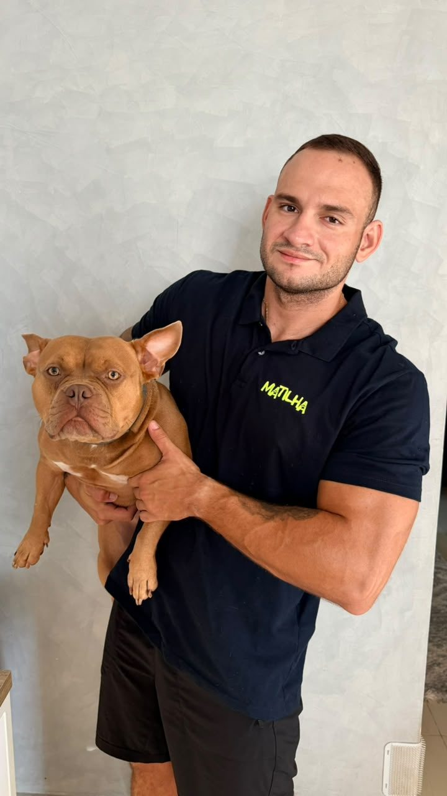
Cada cão exige leitura, método e orientação adequada ao tutor. O trabalho é individualizado e acontece no contexto real em que o cão vive.
O atendimento é individual e pensado para a realidade de cada cão e de cada família. O tutor participa do processo para entender como conduzir, comunicar e manter o aprendizado no dia a dia.
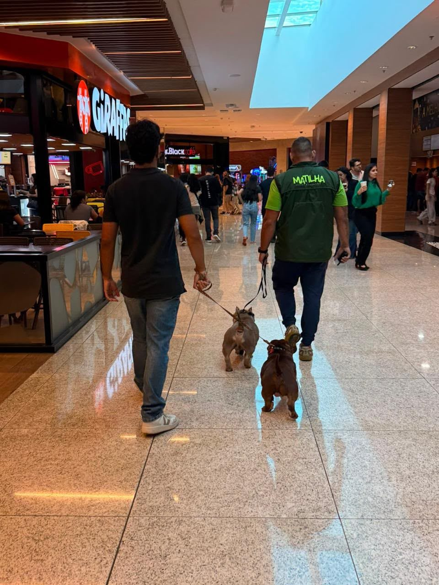
Avaliação do comportamento e da rotina.
Atendimento individual no ambiente em que o cão vive.
Orientação prática ao tutor durante o processo.
Pacotes de 5 ou 10 aulas; consultoria online disponível.
Atendimento em Águas Claras, Vicente Pires, Guará e Sudoeste — DF.
Conversar sobre meu cão ↗A cada dia ela está mais confiante, tranquila e adaptada à nossa rotina.
Resgatada com medo e insegurança, Gaia evoluiu com a orientação do João e respeito ao seu tempo.
RaquelTutora da GaiaO adestramento foi a melhor decisão que tomamos.
Após 8 aulas, Brenda relata um Zeus mais obediente e calmo, com redução significativa da destruição e mais qualidade de vida.
BrendaTutora do ZeusA evolução dela em termos de obediência e convivência com todos aqui em casa foi notável.
Luis destaca o profissionalismo do João. Os cães da família também já ficaram hospedados com ele.
Luis AlejandroTutor da MokaA Charlie aprendeu, eu aprendi e nossa relação melhorou muito.
Guilherme conta que aprendeu a estabelecer limites e se comunicar melhor com Charlie.
GuilhermeTutor da CharlieO adestrador João Felipe foi muito atencioso e profissional com a Cléo.Maria AugustaTutora da Cléo
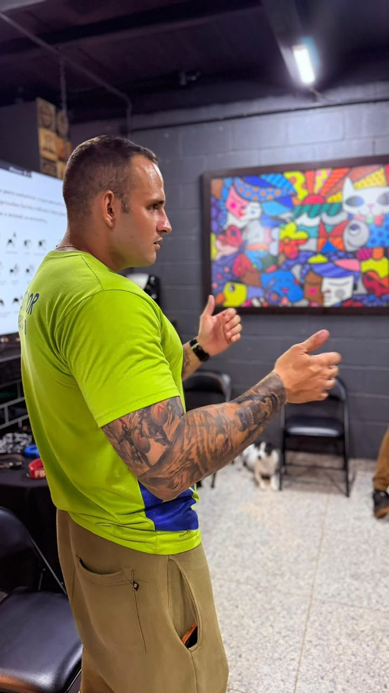
João Felipe Ferreira Zeidan atua há 3 anos com adestramento canino. Já adestrou mais de 30 cães diretamente e participou do trabalho com mais de 150 cães dentro da Matilha Adestramentos.
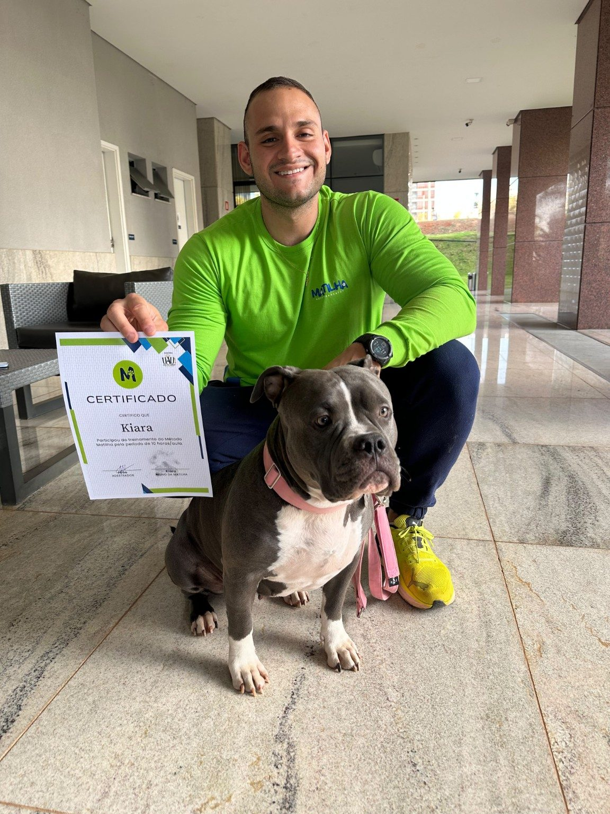
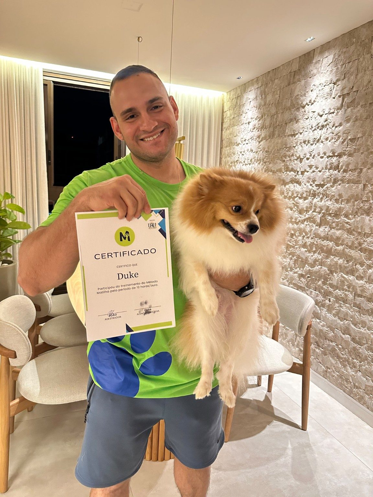
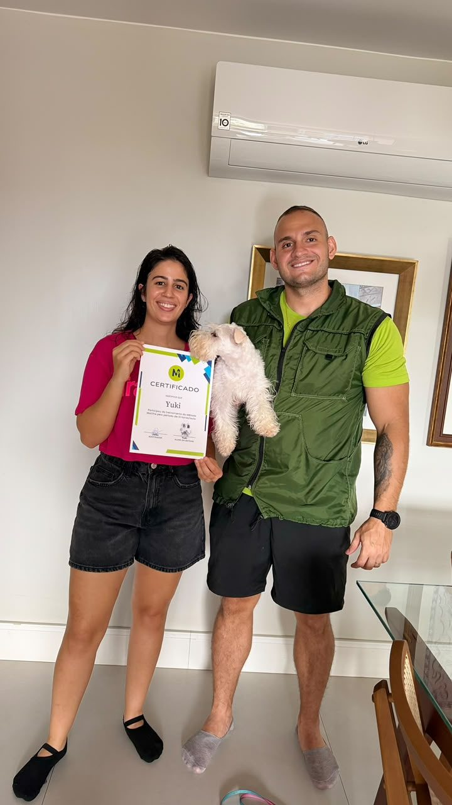
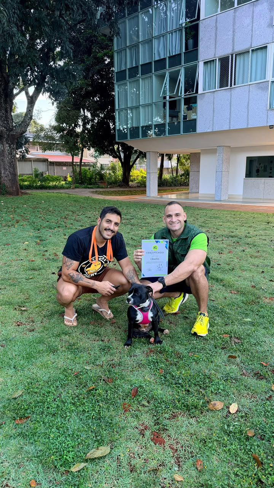
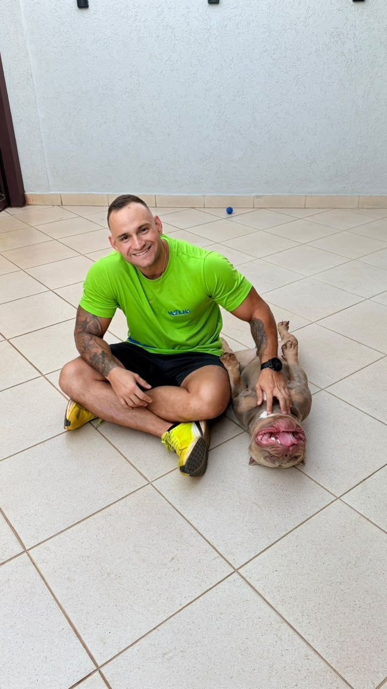
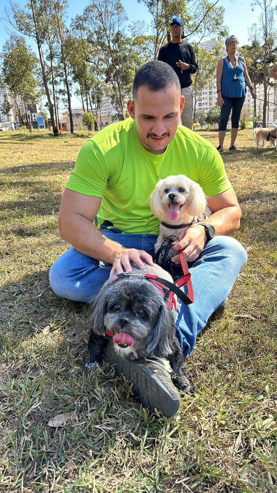
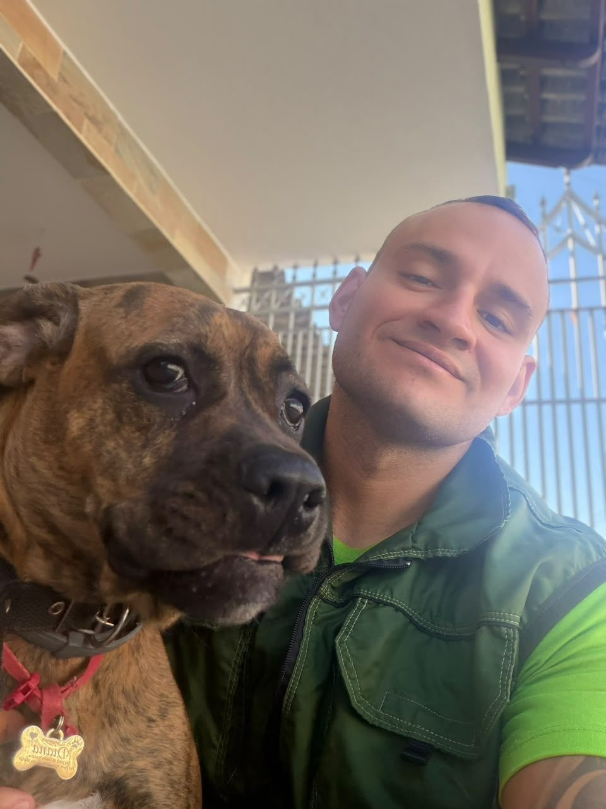
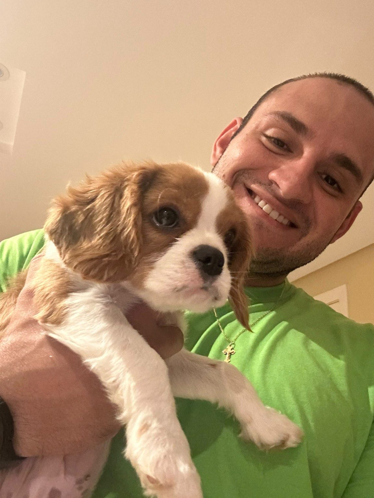
Registros de conclusão dos cães atendidos.
A Matilha atua com adestramento domiciliar, cursos presenciais e hospedagem para cães. O vínculo reforça a experiência prática e a estrutura profissional por trás do atendimento.
Conte brevemente o que está acontecendo e fale diretamente com João pelo WhatsApp.
Falar com João ↗ +55 61 99512-4680 · @jfzeidan